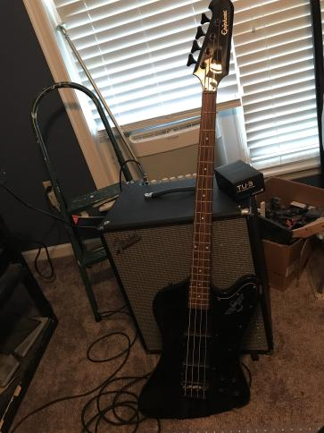

Web Developer | Software Engineer
Hi! I'm Aaron Henderson, a master's student at the University of South Carolina Aiken.
Graduated in 2012
Associate's Degree in Information Technology Management earned in 2016
Bachelor's Degree in Applied Computer Science earned in 2024
Currently pursuing a Master's in Computer & Information Science
In my free time, I have a few hobbies.
I enjoy playing bass and guitar primarily but also am attempting to teach myself keyboard.
I enjoy playing video games to keep in contact with my friends around the world and just for myself. My current go to games have been Team Cheery's Hollow Knight and Hollow Knight: Silksong.
Tabletop games are a great way to spend time with friends and family. I would suggest Betrayal at House on the Hill, Lords of Waterdeep, and Tsuro of the Sea as great options for people wanting to try board games other than Life and Monopoly.
I also enjoy the Grimdark universe of the forty-first millennium, where there is only war, Warhammer 40k. In this dark and bloated setting, my favorite faction is the Necrons, a race of ancient undead robots inspired by ancient Egyptian dynasties. All hail the Infinite Empire!